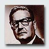

Salvador Allende Gossens (1908-1973)
Político chileno; líder del Partido Socialista, del que también fue cofundador en 1933. Presidente de Chile en 1970. Estudió medicina y desde su época de estudiante universitario participó en algunos grupos de tendencia izquierdista. Más tarde alternó su dedicación a la política con el ejercicio de la medicina.
En septiembre de 1970, después de tres intentos, fue elegido presidente de Chile como candidato de la Unidad Popular, coalición de partidos de izquierda, obteniendo el 36,2 por ciento de los votos. Fue aclamado como líder del "primer gobierno marxista elegido libremente en el mundo occidental". Para conseguir su ratificación en la Presidencia, dado el escaso margen de votos obtenidos, consiguió el apoyo de los cristiano-demócratas, a quienes ofreció a cambio garantías constitucionales: "no será el nuestro un Gobierno comunista, ni socialista, ni radical".
Allende quería llevar a cabo su programa de reformas democráticas. La reforma agraria, la redistribución de la renta, la nacionalización, y el control estatal fueron algunos de los principales puntos de su política, con la que pretendía una renovación total del país. Su programa de reformas y nacionalizaciones chocó frontalmente con la oposición del Congreso, y en septiembre de 1973 fue derrocado por un golpe de Estado. Falleció en el palacio presidencial durante el asalto. Tomó el poder Augusto Pinochet, comandante en jefe del Ejército que encabezó el golpe militar.